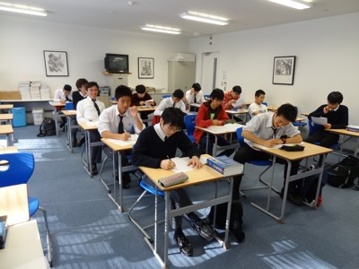

IB Higher Level Mathematics
Course Description
This two-year course represents the highest level mathematics course offered at St Mary's. It is for students who are mathematically inclined, and who have achieved well in the highest level of 10th Grade mathematics.
Year 1
Broad topics covered are as follows:
- Functions: Graphs, inverses, domain and range, transformations; polynomials, trigonometric, exponential, logarithmic
- Binomial theorem
- Complex numbers, including DeMoivre's Theorem
- Series: Geometric and Arithmetic
- Trigonometry: unit circle, identities, laws of sines and cosines, equations, graphs
- Vectors: scalar and dot products; equations of lines and planes
- Probability: Independent events; conditional probability; problems involving permutations
- Calculus: Differential calculus and applications; integral calculus and applications
Year 2
Broad topics covered are as follows:
- Basic statistics: histograms and box plots; percentiles of grouped and ungrouped data; mean, median, mode, standard deviation, variance
- Probability: Independent events; conditional probability; problems involving permutations
- Discrete random variables: distributions; expectation and variance
- Special discrete distributions: Poisson, binomial, geometric, negative binomial, Hypergeometric, Bernoulli
- Continuous random variables: including exponential distribution
- Normal distribution, t-distribution, standard normal distribution
- Confidence intervals
- Significance testing
- Bivariate distributions, correlation, covariance
- Use of graphing display calculator for statistics and other applications
- General overview of entire syllabus, including review of past exam papers
Assessment
Assessment will include the following:
- Homework assignments
- Homework notebooks
- Tests and quizzes
- Projects
- Observation/class participation
Homework
Approximately 45 - 60 minutes a day, 3 - 4 times a week on average. Additionally, there are some projects which will require more time.
Resources
- Advanced Level Statistics, Second Ed, Crawshaw (Nelson Thornes)
- Understanding Pure Mathematics, Sadler et al. (Oxford)
- Calculus of a Single Variable, Larson, et al. (Houghton Mifflin)
- Mathematics for the International Student, Third Edition, Haese, et al (Haese and Harris)
Other Information
Students are required to have a graphing calculator, preferably a TI-84. Possession of a graphing software program on a home computer would also be useful.